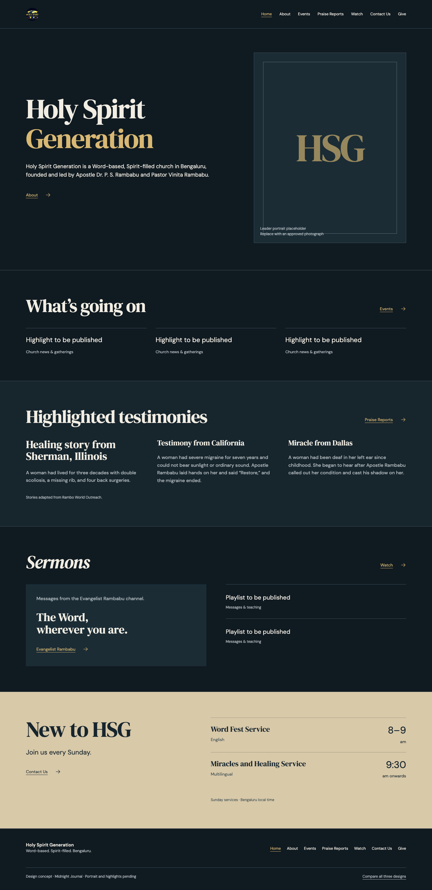
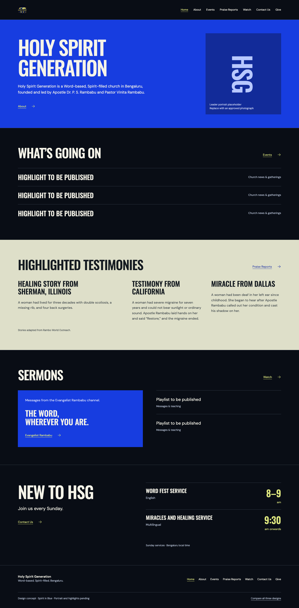
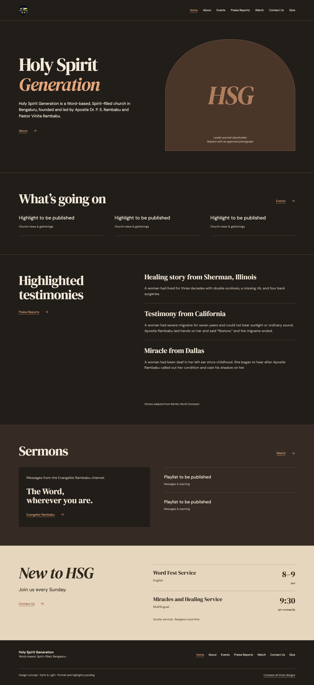

Open full pageMidnight Journal
Editorial, spacious, and quietly confident.
Complete landing-page explorations for Holy Spirit Generation. Each keeps the same church content and Sunday schedule, with a different visual character.

Open full pageEditorial, spacious, and quietly confident.

Open full pageConfident typography and a church-poster rhythm.

Open full pageWarm charcoal, copper, and an unhurried reading experience.
Design explorations, not published church pages. All portraits are marked placeholders. Unpublished highlights and playlists stay informational. Navigation opens preview shells; the supplied YouTube channel is a working external link.